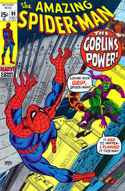

Importantes herois criados por Stan Lee
Homem Aranha
O Homem-Aranha foi criado pelo editor/escritor Stan Lee e pelo escritor/artista Steve Ditko, e a sua primeira aparição foi no livro de antologia Amazing Fantasy #15 (Agosto de 1962), ele foi criado como um orfão adotado por sua tia, vive conflitos e interesses de uma adolecente comum enquanto recebe poderes de uma aranha radioativa. Em suas histórias era comum tocar em temas que os jovens se identificavam como relacionamento com a família, a busca por dinheiro nos primeiros empregos e namoros.
Hulk
O Hulk, por vezes referido como O Incrível Hulk (The Incredible Hulk, no original em inglês) é um personagem de quadrinhos/banda desenhada do gênero super-herói, propriedade da Marvel Comics, editora pela qual as histórias do personagem são publicados desde sua criação, nos anos 1960. Concebido pelo roteirista Stan Lee (1922-2018) e pelo desenhista Jack Kirby (1917-1994), teve sua primeira aparição junto ao público original dos Estados Unidos na revista The Incredible Hulk n°1, lançada no mercado americano pela Marvel Comics em maio de 1962. Suas histórias costumava focar nas possibilidades de contaminação por radiação em indivíduos ou cidades na época da Guerra Fria.
Quarteto Fantástico
O Quarteto Fantástico é uma equipe de super-herói de histórias em quadrinhos publicados pela Marvel Comics. O grupo estreou em The Fantastic Four #1 (data de novembro 1961), que ajudou a inaugurar um novo nível de realismo no meio. O Quarteto Fantástico foi o primeiro time de super-herói criado pelo escritor-editor Stan Lee e o ilustrador Jack Kirby, que desenvolveram uma abordagem colaborativa para a criação de quadrinhos com este título que usariam a partir de então.Como a maioria dos personagens criados pela Marvel durante a década de 1960, o Quarteto Fantástico deve os seus poderes à exposição a radiação, neste caso mais especificamente à radiação cósmica, com a qual teriam entrado em contacto durante uma viagem de exploração espacial.